La storia
dei display
Cosa sono i display?
Display dall’inglese deriva da “to display” cioè “mostrare, esporre” e dal latino “displicare” quindi “spiegare, svolgere”. “I display sono una vasta classe di dispositivi in grado di generare immagini bidimensionali fisse o variabili, in bianco e nero o a colori, in relazione a diverse tipologie di informazioni e dati” Un display è definito “display elettronico” quando questo riceve un segnale elettrico. Il display più grande? Un display LED (della LG) grande tanto quanto cinque campi da calcio, usato nella Fremont Street Experience a Las Vegas.
Fremont Street Experience
Quando sono nati?
Il termine display viene usato per la prima volta nel 1945 riferendosi a in particolare al RADAR (Radio Detection And Ranging), sistema che utilizza a onde elettromagnetiche per rilevare aerei navi o veicoli. I display sono nati come semplici superfici solitamente opachi che conentono scritte, segni e simboli in forma visiva o in alcuni casi tattili (per esempio lo “schermo braille” per i non vedenti). Oggi si sono evoluti tanto da visualizzare grafiche a colori e video 3D. I primi display erano solo testuali, come i tabelloni per mostrare l’andamento della borsa, l’orario di partenza o arrivo degli aerei e treni (display cosiddetti eletromeccanici). Questi sono stati poi sostituiti da dispositivi a tubo catodico, poi da cristalli liquidi (LCD), LED e OLED arrivando quindi a display colorati che permettono di visualizzare immagini statie e in movimento in alta qualità.
Scienziato al lavoro su un display RADAR, 1944
Griglia verticale di un CRT
1897 CRT
I display a tubi catodici, in inglese Cathode Ray Tube (CRT), nascono grazie a Karl Ferdinand Braun. Egli inventò la prima versione di quest'ultimi (anche conosciuti come Braun Tube) funzionanti attraverso diodi a catodo graddo. Il primo tubo a raggi catodici ad utilizzare un catodo caldo fu sviluppato da John B. Johnson (che diede il nome al termine Johnson noise) e Harry Weiner Weinhart di Western Electric, e divenne un prodotto commerciale nel 1922. I CRT nascono in particolare per la televisione e i monitor dei primi computer (in questo caso i display vengono chiamati anche cinescopio). I CRT hanno subito numerose modifiche nel tempo a causa del loro ingombro, dell’elevato consumo di potenza elettrica e delle radiazioni emesse verso lo spettatore arrivando così a ridurre lo spessore e il peso. Questi display sono ormai stati sostituiti completamente da display a cristalli liquidi, al plasma e LED.
Primo tubo catodico "Brauntube" a sinistra
e a destra un CRT per TV
Funzionamento del display
Inizialmente i CRT producevano immagini attraverso fasce di elettroni (= raggi catodici) sparate su una superficie (schermo) di materiale fluorescente. Gli elettroni vengono emessi attraverso una differenza di potenziale elettrico tra catodo (piccolo elemento metallico) e anodo (superficie interna dello schermo). Lo spessore e il peso dei CRT sono stati diminuiti utilizzando fasci di eletttroni che si muovono parallelamente allo schermo e che vengono indirizzati nella zona specifica dello schermo che deve essere illuminata.
Sopra a sinistra i pixel CRT di un PC e a destra quelli di una TV
Pannello LED
1961 LED
La tecnologia LED (Light Emitting Diode) nasce negli anni 1961-62 e il primo schermo LED venne svilluppato da Nick Holonyack Jr.. Nel 1995 arrivano sul mercato schermi LED giganti dalle dimensioni cinematografiche. I primi diodi luminosi erano disponibili solamente nel colore rosso, in seguito vennero sviluppati diodi di colore giallo e verde che permettevano di visualizzare quattro "colori": spento, verde, rosso e giallo (creato dall'unione del verde più il rosso). La rivoluzione avvenne però negli anni '90 quando, grazie a Akasaki e Hiroshi Amano (che hanno vinto il premio Nobel per la fisica nel 2014), è stato possibile arrivare i display LED come li conosciamo oggi. Hiroshi e Amano crearono infatti il LED blu che fece si di arrivare a una scala cromatica di colori completa inetgrando i tre diodi: rosso, verde e blu.
Primo diodo, creato da N. Holonyak Jr. A destra un display LED a segmenti
Funzionamento del display
I dispositivi LED funzionano attraverso una retroilluminazione di oltre duemila piccoli diodi LED di colore rosso, verde e blu. Quest’ultimi, insieme, creano la luce bianca che passa da una lastra di diffusione per renderla omogenea. Dopodiché la luce illumina il pannello a cristalli liquidi trasmettendo l’immagine finale. Questi schermi hanno una miglior qualità dei colori, pannelli sottilissimi e una maggiore durata d'uso (100.000 ore rispetto ai 50.000 di altri schermi). Esistono vari tipi di retroilluminazione dello schermo: LED Edge (i LED sono sul perimetro dello schermo), Full LED (LED posizionati uniformemente dietro allo schermo, i colori sono migliori rispetto a Edge ma il costo è più alto) e Quantum Dot (illuminazione attraverso microcristalli a luce blu aumentando i colori percepibili all’occhio, tecnologia molto costosa e usata ancora poco). Vi è in ultimo il tipo di display LED a "segmenti" composto da 7, 14 o 16 segmenti e può solo creare cifre o caratteri alfanumerici. I segmenti si accendono e spengono creando il glifo desiderato e sono solitamente LED o cristalli liquidi. Viene usato per esempio in orologi digitali e calcolatrici tascabili.
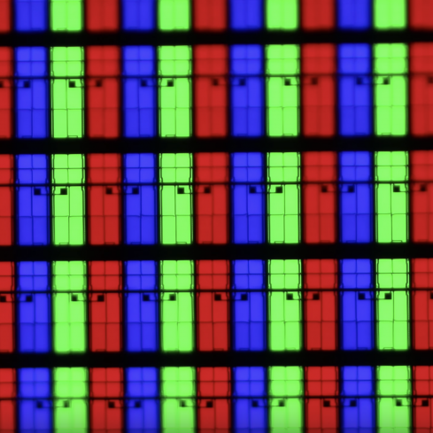Macro di una televisione LED
1964 DPD
I display al plasma, dall’inglese Plasma Display Panel (DPD), nascono nel 1964 dai professori Gene Slottow e Donald Bitzer che crearono il primo display al plasma all’università di Illinois. È nel 1992 che i DPD ebbero il loro debutto sul commercio grazie a Fujitsu che realizzò il primo pannello al plasma a 21 colori. Questo display era però ancora molto caro ed è quindi nel 1997 che Fujitsu riuscì a portare sul mercato i primi monitor e le prime televisioni con 42 pollici da 852x480. In italia nel 1998 si poteano trovare sette monitor al plasma tutti ad un prezzo compreso tra i 16 mio (oggi circa 8.000 Euro) e 26 mio di lire (oggi circa 13.500 Euro), prezzo che non era quindi accessibile a chiunque.bNegli anni successivi i prezzi iniziano ad abbassarsi mostrando però anche i primi difetti tecnici: perdita di luminosità, consumi altissimi e burn-in (immagine bloccata). Dal 2003 e dal 2006 sono gli anni migliori per il display al plasma e nel 2007 Pioneer riesce a sfruttare il plasma per far apparire un nero perfetto sullo schermo. Tuttavia nel 2009 Pioneer decide di abbandonare il business delle TV al plasma vendendo in parte i brevetti a Panasonic che realizza nel 2010 il più grande schermo plasma al mondo con 152 pollici, 2160p 3D. Purtroppo nel 2013 Panasconic annuncia il fallimento.
PLATO V: display monocromatico del 1981. A destra una lampada al plasma.
Funzionamento del display
I DPD sono costruiti con due pannelli di vetro e due elettrodi (materiale conduttore) all’interno dei quali vi sono svariate celle dove sono presenti gas nobili (neon e xeno). Questi gas vengono trasformati da un plasma (un gas ionizzato) che incita i fosfori (sostanza che permette di farci vedere la fosforescenza) ad emettere luce. Ogni pixel è formato da tre sottocelle indipendenti, ognuna di un diverso fosforo di colore: rosso, verde e blu. A dipendenza dell’intensità di corrente che scorre nelle celle si creano le varie combinazione dei tre colori. Questi fosfori però non possono creare le sfumature di colore in quanto la cella è o accesa o spenta, per creare i colori intermeti quindi si gioca sul tempo di accensione. La qualità è simile ai CRT solo che i DPD hanno un minor ingombro, maggiore robustezza e lunga vita operativa. I display al plasma hanno un'ampia gamma di colori, possono essere costruiti in dimensioni grandi (fino a 262 cm, cioè 103 pollici, diagonalmente) e indipendentemente dalle dimensioni dello schermo il dispositivo rimane sottile (poiché ogni pixel viene acceso individualmente). Una curiosità: il plasma viene utilittazo anche per scopi più decordativi come in lampade.
Foto macro di un display al plasma
Cristalli liquidi
1965 LCD
I display a cristalli liquidi (Liquid Crystal Display in inglese) sono stati inventati e utilizzati per la prima volta nel 1965 da George Heilmeier (che anni dopo, nel 1991, la medaglia nazionale per le sceinze) che erano stati scoperti dal botanico Friedrich Reinitzer nel 1888. Gli scienziati erano infatti già a conoscenza dei cristalli liquidi a quei tempi, Reinitzer aveva riscaldato un composto organico (cholerteryl benzoate) e ha scoperto che aveva due punti differenti di fusione che diventava opaco e tornava chiaro a dipendenza della temperatura. Tuttavia i primi display che struttavano queste caratteristiche furono utilizzati solo a partire dagli anni '60. Nel 2000 Bill Clinton la definì l'invenzione migliore del secolo.
G. H. Heilmeier mostrando uno dei primi LCD e a destra uno schermo LCD collegato ad Arduino.
Funzionamento del display
I display degli LCD sono formati da un insieme di celle con al loro interno dei cristalli liquidi che sfruttano proprietà organiche (un composto a base di carbonio che ha permesso di ridurre la superficie dei display). I cristalli liquidi vengono inseriti tra due superfici vetrose dotate di una pellicola “transitor” che attivano il campo elettrico. Ogni contatto elettrico regola una parte del pannello; un pixel (ma questi non sono fisicamente separati come avviene negli schermi al plasma). In questi dispositivi le molecole non sono incastonate in una struttura cristallina rigida ma vengono orientate con campi elettrici e allineate lungo il loro asse facendone passare la retroilluminazione. Ci sono dispositivi a riflessione e a trasmissione; i primi sfruttano la luce naturale e la riflettono da dietro allo schermo (sono quindi adatti sia in ambienti molto luminosi che non) e i secondi hanno una retroilluminazione (e sono adatti piuttosto per ambienti scuri). Le caratteristiche degli LCD sono il basso consumo di potenza specifica, una bassa tensione di alimentazione e spessori molto fini.
Foto macro di un dispositivo LCD
1987 OLED
I dispositivi OLED è l'acronimo di Organic Emitting Diode, nascono nel 1987 dai ricercatori della Eastman Kodak Ching W. Tang e Steven Van Slyke. La nominazione di questo dispositivo spiega la radice del suo funzionamento: un diodo a emissione di luce, che è anche presente nei LED ma in questo caso troviamo in aggiunta il temine "organico". L'elettroluminescenza era già conosciuta prima degli anni '80 tuttavia vennero costruiti soltanto prototipi in quanto richiedevano una tensione elettrica troppo alta, di oltre i 100 Volt, che li rendeva pericolosi. Il primo device efficiente a a bassa tensione venne presentato nel 1987 dai chimici Ching Wang Tang e Steven Van Slyke alla Eastman Kodak. Questi display utilizzavano due strati organici che permisero poi di migliorare la luminosità emessa.
Prototipi di pannelli luminosi OLED e a destra un Samsung Edge con schermo OLED dai lati arrotondati
Funzionamento del display
I display OLED utilizzano la propria luce permettendo la realizzazione di display molto sottili, pieghevoli (per esempio il display del Samsung Galaxy Edge che ha lo schermo arrotondato sui lati) e con minori costi energetici. Inoltre la qualità dei neri è molto buona poiché ogni pixel illumina e si spegne indipendentemente (spento = nero). Purtroppo l’unico svantaggio è il ciclo vitale di questo display che si aggira intorno alle 5000 ore (rispetto alle 60.000 ore di altri dispositivi). Questo display sfrutta un diodo organico ed è composto da vari strati sovrapposti: un primo strato trasparente dalle funzioni protettive, sopra viene aggiunto uno strato conduttore trasparente che funge da anodo, tre strati organici e tra di essi materiale elettroluminescenti di colore rosso, verde e blu. Ciò nonostante lo schermo rimane comunque sottile (uno dei vantaggi dell'OLED). Ulteriori vantaggi degli OLED sono la loro leggerezza, flessibilità, l'ampio angolo di visione (quasi 90° dalla normale) e un ottimo contrasto così come un buona saturazioe dei colori e un buon tempo di risposta. L'elevato costo del processo produttivo e la durata operativa (che è inferiore a quella degli LCD) sono invece gli svantaggi di questo dispositivo.
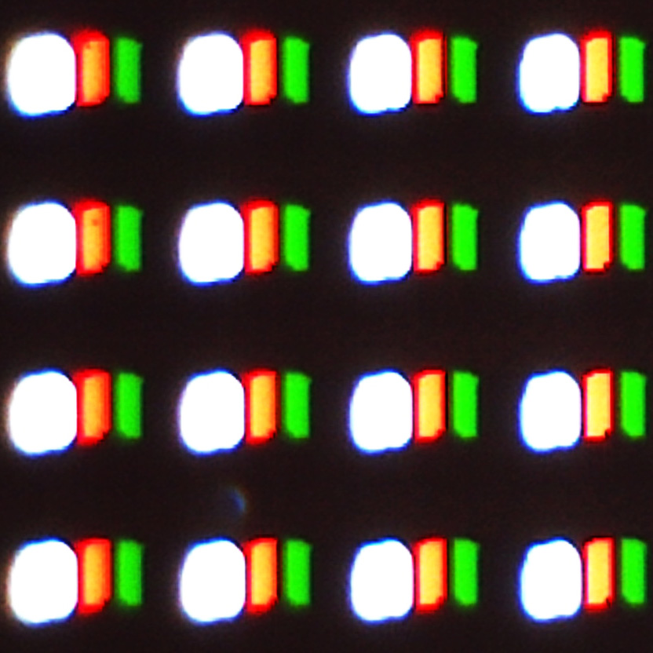Fotografia macro di un OLED
2007 Touch
Il padre della tecnologia Touch Screen è considerato E.A.Johnson che progettò il primo touchscreen in assoluto nella storia nel 1965. I primi sono stati utilizzati però solo nel 1995. L’arrivo dell’I-Phone nel 2007 rivoluziona i schermi tattili, essi diventano un successo e dopo la sua uscita tutti gli altri telefoni hanno dovuto progettare i propri devices con uno schermo tattile per soddisfare i nuovi bisogni degli utenti.
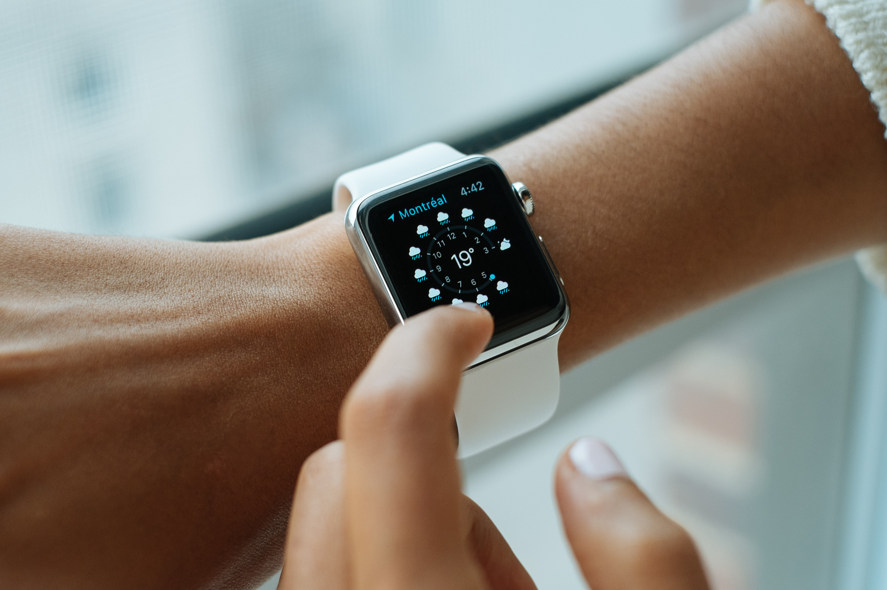 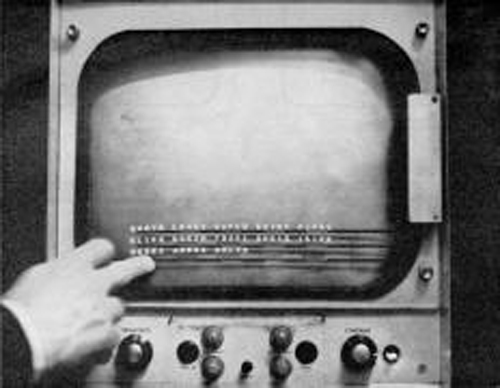Primo touchscreen della storia e a destra l'Apple Watch che ha uno schermo touch AMOLED
Funzionamento del display
I touchscreen (o multi-touch se riconosce più dita) possono essere di due tipologie: resistivo o capacitivo. Gli schermi resistivi è fatto di vari strati, due ricoperti di materiale conduttore così che quando si preme con il dito i due strati si toccano definendo il punto interessato da cliccare. Schermi capacitivi invece sono utilizzati maggiormente per gli smartphone Android, iOS o Windows Phone. Questi sfruttano. Ai quattro angoli del display viene applicata una tensione che si espande uniformemente su tutta la sua superficie. Si può quindi anche sfiorare lo schermo per farlo funzionare, quando succede i capacitori rilevano la temperatura cambiando il flusso di elettroni che rende possibile la localizzazione del punto esatto scelto. Per farlo funzionare si necessita uno strato di ossido di metallico posto sopra il vetro dello schermo. Curiosità: lo schermo dell'Apple Watch è un touch di tipo AMOLED ed è molto diverso dallo schermo di un I-Phone X, come si può vedere nel capitolo riguardante il display Retina.
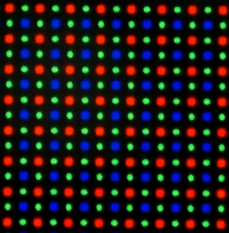 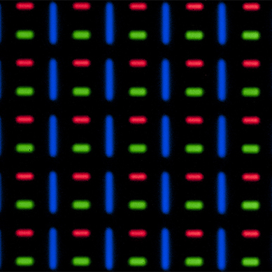Pixel di un Samsung Galaxy S7 Edge (sinistra) e di un Apple Watch (destra)
Macro schermo AMOLED
2010 AMOLED
Il primissimo schermo AMOLED (Active-Matrix Organic light-emitting Diode) è stato utilizzato nel 2008 da Nokia (con il Nokia N85). Tra il 2010-2013 nascono gli schermi AMOLED che hanno una risoluzione più alta degli schermi OLED. Questi display si basano su una matrice attiva, questa tecnologia è stata inventata da Bernard J. Lechner alla RCA utilizzando MOSFETs (metal-oxide-semiconductor field-effect transistors).
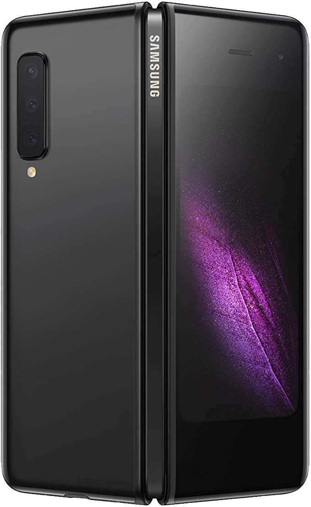 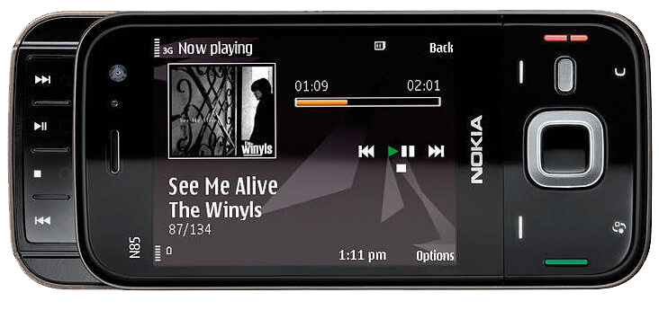Nokia N85: primo telefono con schermo AMOLED
e a desta il nuovo Samsung Galaxy Fold
Funzionamento del display
I display AMOLED sono una versione avanzata degli OLEd, composti da una matrice attiva di pixel OLED assieme ad una piccola pellicola che genera luce. Questi tipi di display sono utilizzati per dispositivi portatili. I singoli pixel vengono controllati da una matrice attiva dove ogni pixel possiede una propria connessione elettrica (ci sono infatti anche quelli con una matrice passiva, i POLED). Non avendo nessuna retroilluminazione questi schermi hanno un buon contrasto. Ulteriori vantaggi degli AMOLED sono la maggiore flessibilità rispetto agli OLED (un'esempio è il nuovo Samsung Galaxy Fold) e non hanno, in teoria, limiti di dimensione dello schermo stesso, il costo relativamente basso (ma più alto degli OLED), robustezza, basso consumo di batteria (fino a 40% rispetto ad altri schermi). Il principale svantaggio invece è il maggiore consumo di energia rispetto agli schermi OLED.
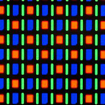Zoom di uno schermo AMOLED
2010 Retina
Il termine è stato cognato da Apple, in realtà lo schermo e il nome tecnico sono LCD IPS, e si rifà infatti all'ottima risoluzione ottenuta grazie all'alta densità di pixel (PPI). Lo schermo Retina venne presentato per la prima volta con il lancio dell'iPhone 4 nel 2010. Steve Jobs commentò che questo schermo è così denso di pixel che questi non sono più percepibili al nostro occhio. Da allora, Apple ha lanciato molti più dispositivi con display Retina, alcuni con una densità di pixel superiore a 326ppi. Dal 2017 viene presentato il Super Retina con l'iPhone X ed è il primo smartphone ad utilizzare uno schermo OLED Multi-Touch. Il termine Super Retina è una strategia di marketing per definire l'utilizzo del display OLED invece invete dei LCD. Con l'arrivo dell'iPhone XR nel 2018 Apple presenta il nuovo display Liquid Regin HD.
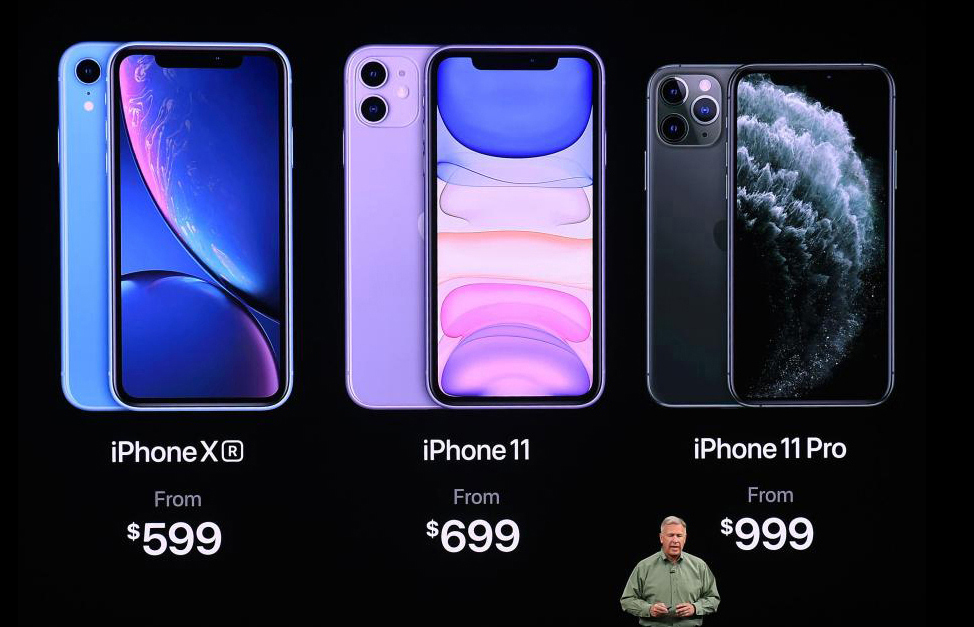 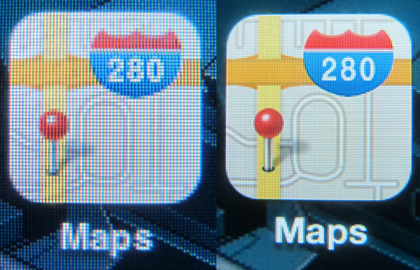I pixel di un iPhone 3 (pixel sinistra) vs. i pixel di un iPhone 4 con display Retina (pixel destra) e nell'immagie di destar
Funzionamento del display
Gli schermi retina hanno pixel fisicamente più piccoli e dipendono dalle dimensioni del pannello. Densità e distanza sono due fattori importantissimi, più siamo lontani dallo schermo meno pixel sono necessari per renderli invisibili (quindi si necessita una minor densità di pixel). Tecnicamente Apple raddoppia il numero di pixel in verticale e orizzontale, quadruplicandoli rispetto agli schermi non Retina. È stato però necessario creare la modalità HiDPI dove ogni elemento presente sull'interfaccia viene raddoppiato, senza questo aggiustamento gli elementi come icone e menu risulterebbero troppo piccoli al nostro occhio. Qual'è la differenza tra il Super Retina e il Liquid Retina? Il primo è una versione aggiornata di un LCD, la densità dei pixel è 326ppi per iPhone e 264ppi per Ipad e la luminosità massima è di 624 nits. Il Liquid Retina invece è un OLED avanzato con un'alta densità di pixel (458ppi), il vantaggio è che ogni pixel è indipendente permettendo un'ottio contrasto, la luminosità massima è di 800 nits.
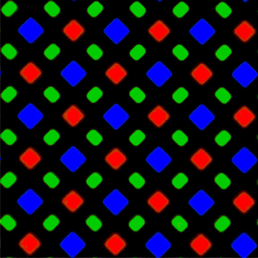Diamond pixel di un Iphone X
201 QLED
Il QLED è una tecnologia di Samsung usata già circa negli anni '90 e l'uso di nanoparticelle (quantum dop) per creare colori è già nota da molto più tempo per esempio per creare i vetri colorati delle chiese che quando venivano colpiti da una sorgente luminosa (il sole) riflettevano colore. La tecnologia QLED di oggi è stata la prima ad essere certificata come quella che raggiunge i colori più realistici di tutti raggiungendo il 100% del volume di colore.
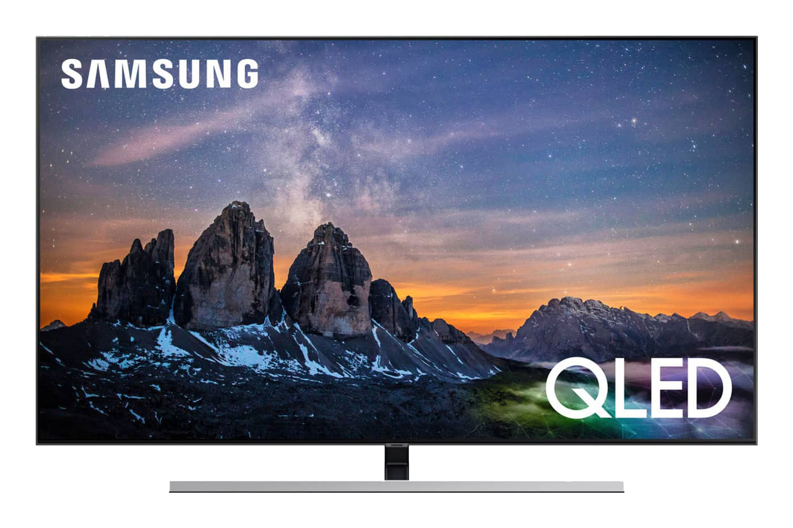 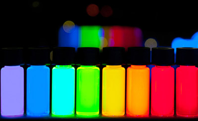Quantum Dot irraggiati con luce ultravioletta e a destra una moderna TV di Samsung con schermo Qled
Funzionamento del display
Il QLED (Quantum Dot Led) si basa su nanocristalli semiconduttori (o punti quantici) e sono simili ai display OLED. In pratica questi display sono degli LCD con l'aggiunta di quantum dots. I punti quantici sono cristalli artificiali minuscoli che possono essere aggiunti sopra lo strato di retroilluminazione su un TV LED, sono compresi tra 2 e 10 nanometri e la loro dimensione ne determina le proprietà dello schermo stesso. Essi, quando vengono illuminati, brillano di un colore particolare in base alla loro dimensione. Questi display vengono sostenuti soprattutto da Samsung, i vantaggi di questi dispositivi sono i colori naturali, la flessibilità e la durata praticamente infinita, alti contrasti.
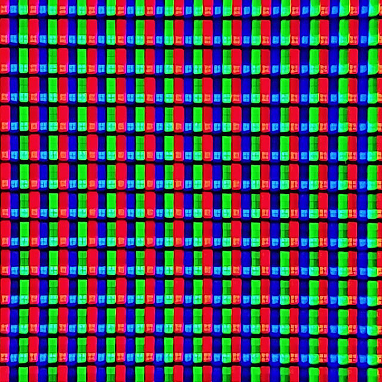Fotografia macro schermo QLED
Fonti
Generale:
Gli schermi dei nostri device - di Intronitro, SteemitDifferenze LCD, OLED E QLED - di Laura Zanotti
QLED vs. OLED (video)
Differenze QLED e OLED (video)
AMOLED vs. OLED (video)
LCD vs. OLED (video)
CRT:
Tubo catodico di una TV (video) - di Matteo RossiLED:
Struttura e meccanismo di funzionamento - di MarinicaLED - su Wikipedia
Dagli LCD monocromatici ai Display Pieghevoli - di Andrea Panz
Nick Holonyak inventore del LED (video) - di Brennan Kelley
DPD:
Storia dei TV al Plasma - di DDAY.ITSfera al plasma - di Ronde88
LCD:
Inventore LCD - di Lino CattabianchiLCD co'è e come funziona - di Natasha Shpuza e Marzio Barbero
Liquid-Crystal-Display - su Wikipedia
La storia di George H. Heilmeier - di New York Times
OLED:
OLED - su WikipediaTouch-screen:
Storia del Touchscreen - di Alessia VicinanzaStoria della tecnologia touchscreen - di Florence Ion
Come funziona un Touchscreen - Redazione di Focus Junior
Apple Watch Touchscereen - di Emiliano Contarino
Amoled:
AMOLED - su WikipediaAMOLED e altri - di Angelo Falcone
Was ist ein AMOLED display? - di Juelu
Nokia primo display AMOLED - di Florin T.
Retina:
Retina Display - su WikipediaVantaggi del Retina - di Jessica Lambiase
What is a Retina? - di Kenny Hemphill
Differenct between Super and Liquid Retina - di Sagar Khillar
QLED:
QLED - su WikipediaWhat is QLED? - di Henry St Leger
The Science of QLED TV - di WSJ Custom Studios con Samsung Electronics
Cos'è un Quantum Dot? - su it.phhsnews.com
Immagini
Fremont Street Experience, LA
Display RADAR del 1944
Le griglie dei tubi catodici
Macro TV CRT
Primo tubo a raggi catodici
Cathode Ray Tube Phosphor
Pannello LED
Primo LED della storia
Macro TV LED
Il primo display al plasma
Macro display al plasma
Atlante Tecnologico - I Display
SUPSI
Corso di interaction design, A.A. 2019-2020
Docenti
Andreas Gysin, Giovanni Profeta
© Fabienne Carrara